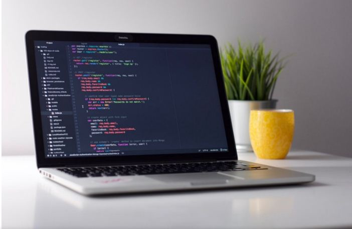

How I landed a full stack developer job without a tech degree or work experience
Six months ago, I got my first developer job as full stack web developer for a startup. I had no relevant work experience, no tech degree, and not even a year of active coding experience. And yet I managed to land my dream offer, and can today for the first time in my life say that I love my job. Here’s how I did it — the long version.

Part 1: Embracing the quarter-life crisis
About three years ago, I was in the middle of a raging quarter-life crisis. I’d graduated from business school, gotten an attractive investment banking job, and then quit that same job just a few months in after realizing I hated everything about it.
Completely lost and quite cliché, I went solo traveling for a few months to “find myself”. And although I thought I did, I didn’t. Not enough anyway. But it actually helped me figure out a few things.
The first thing was that I simply couldn’t keep pursuing a finance career. I just couldn’t see any future scenario where that would make me happy.
The second thing was that backpacking and surfing, although being great and all, wouldn’t help me find that “calling” I was looking for. The only reasonable thing to do seemed like the classic trial-and-error method.
So when I got back home, I decided to try out a few things that I thought might both make me happy and at the same time provide for some sort of decent living. And trial-and-error it was.
First, I thought I’d give writing a serious shot. So I started writing and editing part-time for an online business magazine. It was pretty cool for a while. Working three days a week in a fast-paced editorial office, writing about anything business, finance, tech or sustainability-related.
At the same time, I’d heard so much about life as a freelancer while travelling that I thought I’d try it out. So I set up my own firm, and soon enough stumbled upon a few business analyst projects. Being my own boss was of course very exciting at first, and being able to work from literally anywhere was completely new for me.
I went on like this for about eight months, doubling as a writer/editor and a freelancing business analyst. But eventually I started losing interest in the job at the magazine.
As any sane person dealing with digital content will know, clickbait cultures come at the expense of creativity and quality. In other words, when the main incentive of your content is clicks, all the superlatives required to hunt down those clicks will soon wear down on any creative ambitions that were there in the first place. Besides, I couldn’t shake the feeling that as a writer/editor, I was always too far away from the action I was reporting on.
So I quit. Which was ok according to my trial-and-error deal with myself. But it still felt crappy, since I’d actually invested eight months into the whole writing thing. But as someone smart may or may not have said: when one door closes, another one opens.
And I still had one more thing on my trial-and-error list to check off.
Part 2: The lunch that changed my life
Life is weird, and sometimes it will hide the biggest, most life-changing inspirations in the places you’d least expect. It was certainly like that for me when I experienced my first “pull” towards coding.
Although quitting the job at the magazine felt like a failure, the experience would prove to not have been completely in vain after all. After writing so much about tech startups and the exciting lives of entrepreneurs, I was dead set on giving that lifestyle a shot as well.
And after about a month of research and job hunting, I managed to land a job at one of the then — supposedly — most promising FinTech companies in the Nordics. In just a few years, it had grown to become one of Europe’s biggest equity crowdfunding platforms.
I hadn’t really applied to any specific job opening. But since I really believed in the company’s mission, and was impressed by their success, I’d rather just gotten in touch with their CFO telling him just that. We met a couple of times, and all of a sudden I was working there in some quite fuzzy business development role.
Although I’d hoped to get to work on strategic and analytical projects, I ended up doing what fuzzy business developers usually end up doing: selling. Which was also why this job too didn’t work out in the end.
But, there’s more.
Just like the last job experience from the magazine, this job would also prove to not have been all in vain. In fact, without it, I’d probably not be a developer today. Because that’s where I met Sandra.
She was a front-end developer in the product team, sitting just on the other end of the tiny coworking office we were cramped in at the time.
Technically we were colleagues, but as anyone whose worked in a dysfunctional tech company will know, the distance from the sales team to the product team can often feel like galaxies apart.
It didn’t help that management had just decided to outsource the whole dev team to a remote team in Ukraine either. Meaning Sandra and all the other developers would be let go and were more or less just serving their two months notice.
Despite this distance, one day Sandra and I ended up having lunch together. It would basically be my first real conversation with a professional developer, and I think it was a mix of genuine curiosity and my accelerating existential crisis that quickly more or less turned the lunch into an interview.
And our lunch ended up being a totally life-changing experience for me. More specifically, three revelations made it so.
| 1. | I was shocked to learn that she had no “real” education in web development, which for me at the time would equal nothing short of an academic degree. Everything she knew, she’d learned from MOOC platforms (Massive Open Online Courses), like freeCodeCamp and Codecademy. |
| 2. | She told me she had a background in finance, just like me. In fact, she had been working as a business controller for several years until just recently, when she’d joined the same startup as I had, just a few months earlier as a front-end intern. |
| 3. | When she showed me the portfolio page she’d built with just some six months of coding experience, I couldn’t believe it. It was incredible. |
That lunch opened up a world of possibilities for me. Sandra’s story made me hungry for more.
So for weeks I researched the different types of paths that people had taken to become developers. I ended up in all sorts of forums and articles, many of which I found right here on Medium.
For example, Stackoverflow’s annual developer survey (100,000 interviewees) stated that only half of all professional developers had a bachelor’s degree, and of this half, a whole third majored in something completely unrelated to computer science and software engineering.
The more I read, the more I realized how narrow my definition of education had been. If you didn’t need a computer science degree to break into something as complex as software engineering, what did you need an academic degree for? Although I might not have been able to see it then, I now clearly see how broken the academic system is.
It was designed for the industrial age of workers, where you’d specialize in one craft, and then use those same skills for the rest of your life. It was certainly not designed for today’s knowledge society, where all information of the history of the world is never more than a few clicks away, and where things change so fast that education must in fact be a life-long process, and not the learn-once-use-forever one-off experience.
But that’s a topic big enough for an article by itself. The important thing about that lunch with Sandra was that it ignited something in me, and motivated me to break free from the destructive loop that I found my current half-assed business career to be.
Although I’d always envied programmers around me — even to the extent that I’d taken a Python 101 summer course a few years earlier — I’d never considered it a viable career path for me. At least not without going back to university for 3 — 5 years.
So if you’re reading this Sandra, thank you! If I with this article can inspire just one person the way you inspired me, I’d consider the effort of writing it repaid a thousand times.